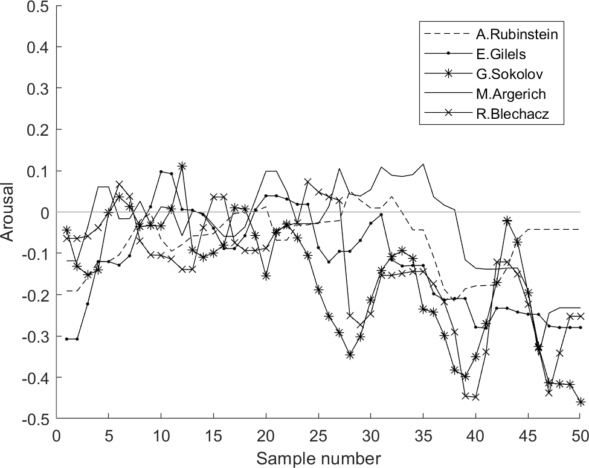
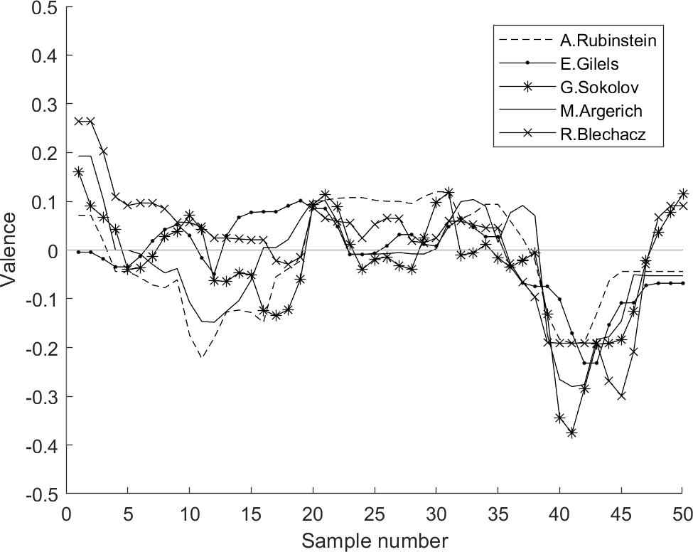
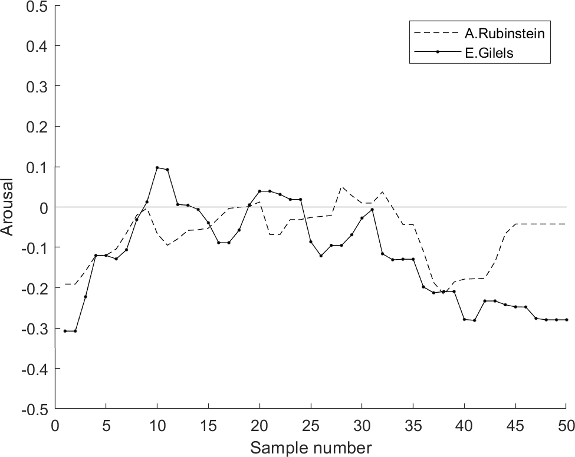
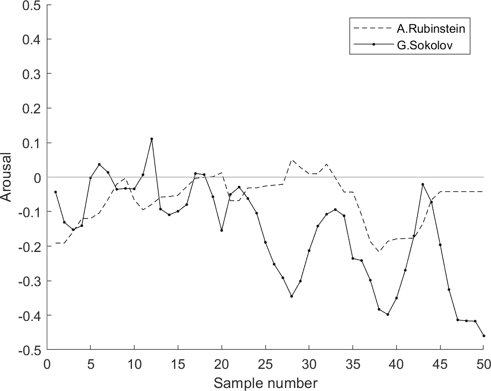
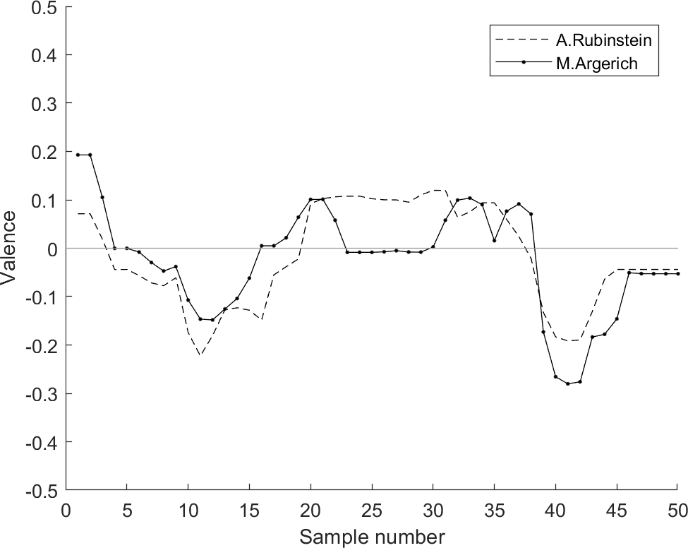
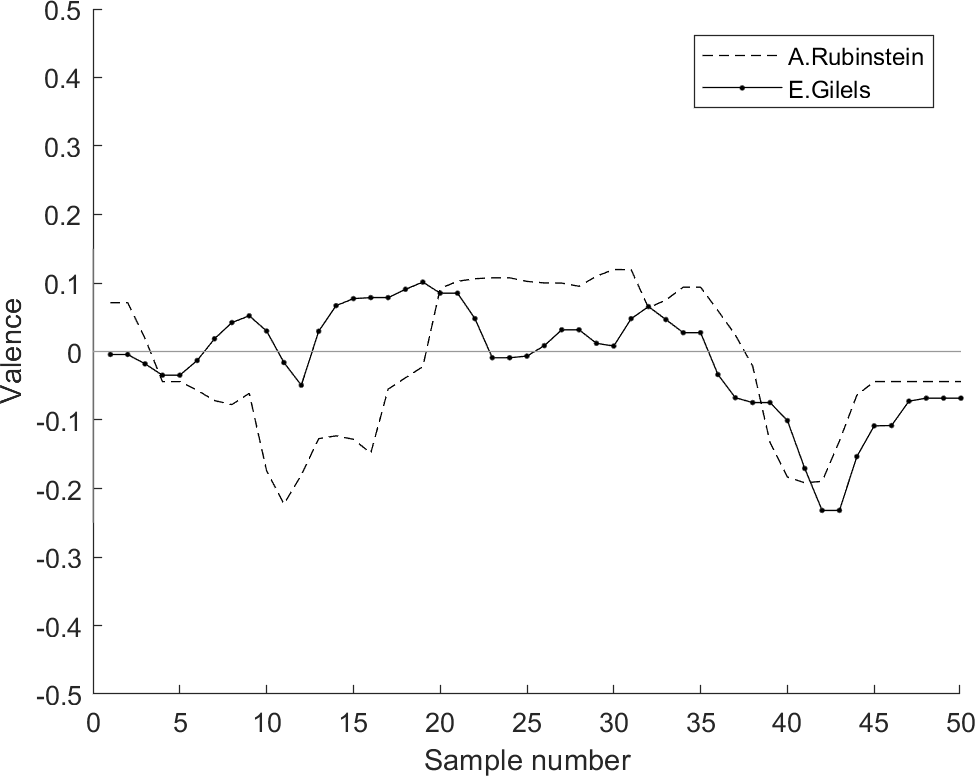
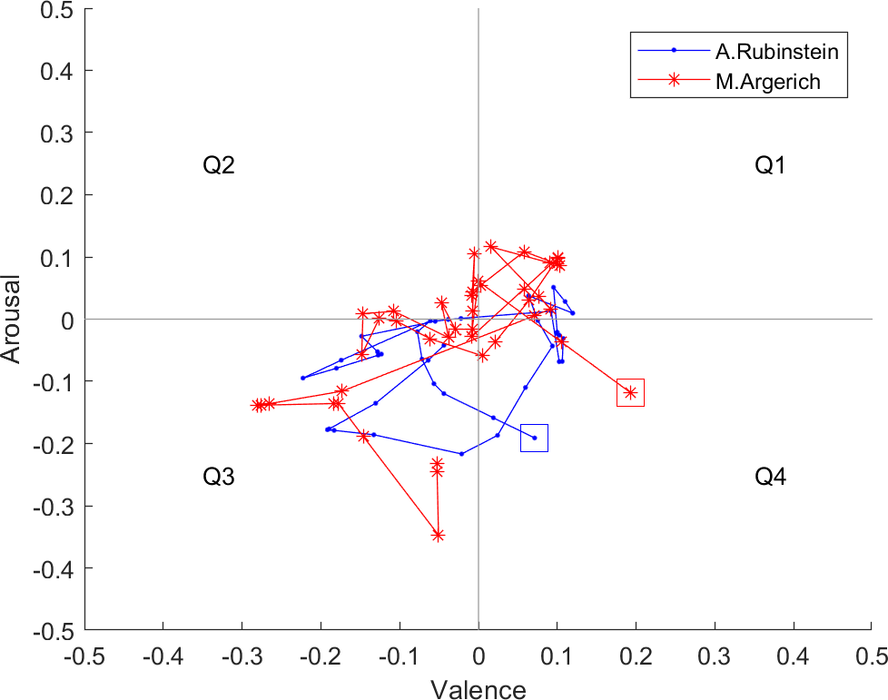
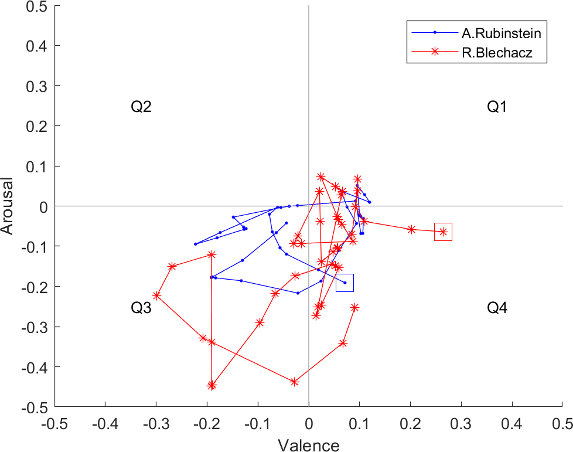

|
Faculty of Computer Science Bialystok University od Technology dr inż. JACEK GREKOW |
The analyzed Chopin performances were audio recordings played by 5 famous pianists:
  Arousal (left) and valence (right) over time for 5 performances of Prelude in F minor, Op.28, No.18 by Frederic Chopin  Arousal over time for the most similar (left) and the most different (right) performances to A. Rubinstein  Valence over time for the most similar (left) and the most different performance (right) to A. Rubinstein of Prelude in F minor, Op.28, No.18 by Frederic Chopin  Arousal-Valence values over time for the most similar (left) and the most different performance (right) to A. Rubinstein of Prelude in F minor, Op.28, No.18 by Frederic Chopin |